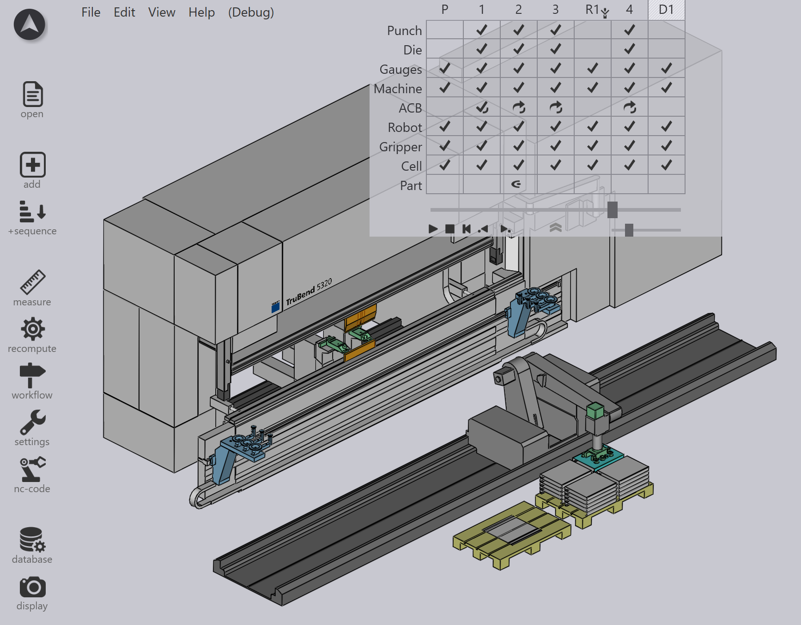

BendMaster CAM
TecZone 包括一個_機器人折彎_ CAM 系統，可以創建適用於BendMaster™折彎單元的折彎程式。此功能建立在折彎 CAM功能上，用於編程手動折彎機的TecZone，因此在繼續之前宜閱讀手冊的該節。

除了手動折彎機的功能外，在計算程式時，TecZone Bend也包括以下特定於BendMaster的操作：
BendMaster模擬
計算BendMaster程式的步驟與計算手動折彎機相同：打開零件，然後按下B以計算 solution[1].

計算程式後，會顯示BendMaster程式的完整表示。除了標準的折彎機部件外，也可以看到以下內容，只需點擊它們即可直接編輯：
-
BendMaster機器人
-
真空夾鉗/機械夾鉗
-
拾取托盤
-
存儲托盤
-
改抓站 計算出的程式包括完整的BendMaster模擬所有機器人軌跡，從拾取板坯一直到存儲成品在輸出托盤上。這個軌跡的每一步都經過碰撞檢查並驗證機器人的可達性。當您編輯程式時，這些檢查會立即實時完成，因此您無需_請求_進行碰撞檢查 - 每次您編輯程式時，結果都會在頂部導航器網格中更新。
1. 這為最近使用的折彎機計算折彎程式。如果需要其他折彎機（或BendMaster機台），點擊檔案選項卡中的機台名稱，然後選擇其他機台。